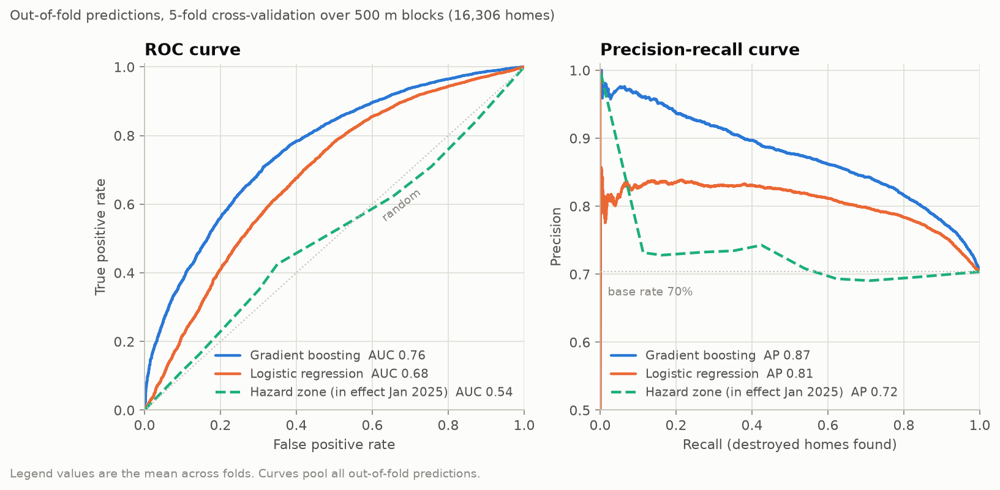
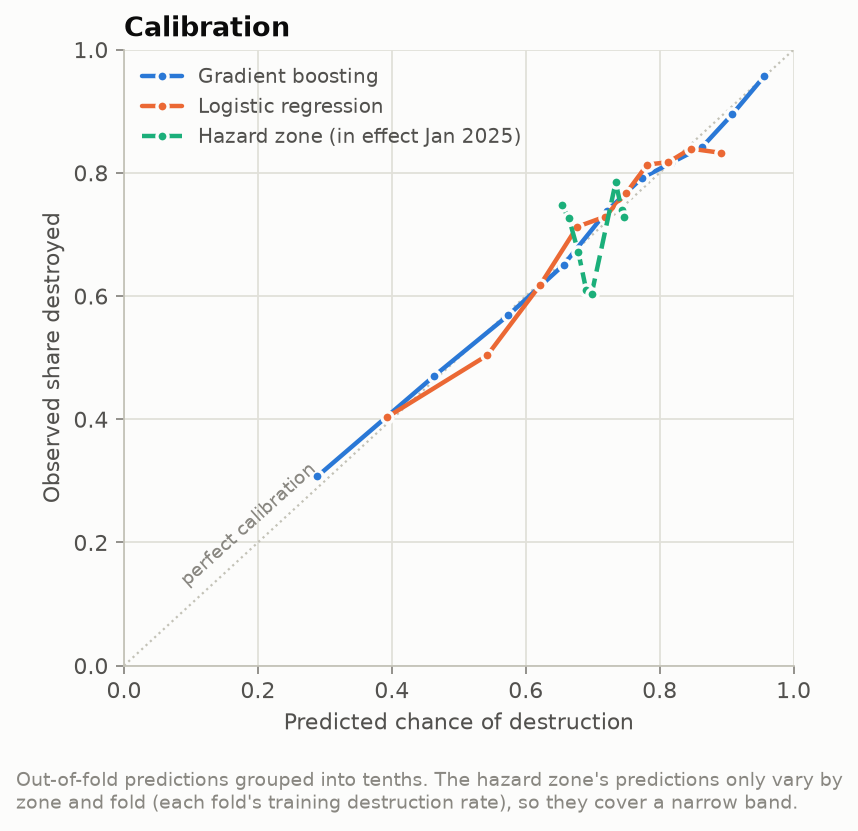
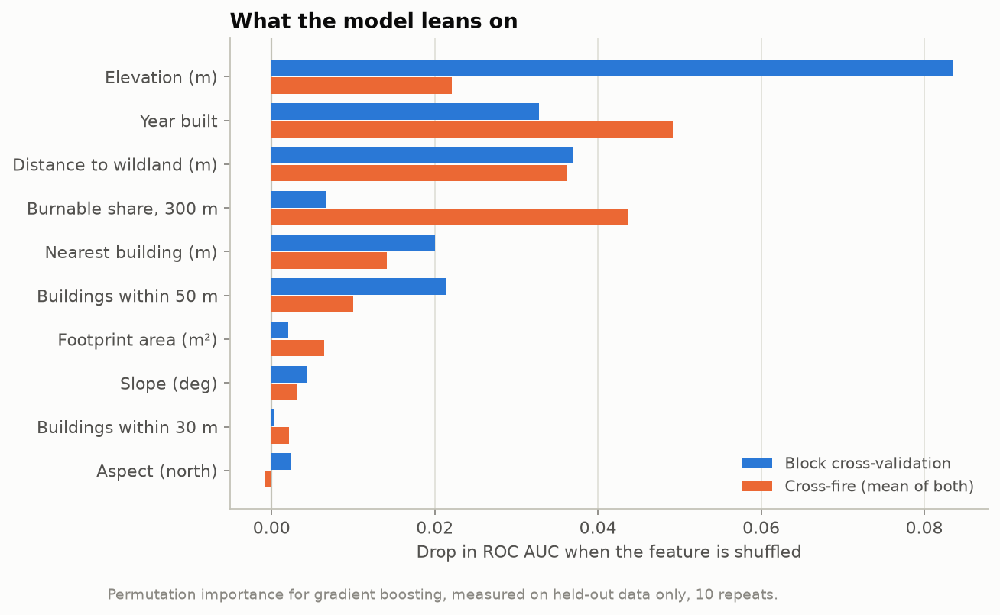
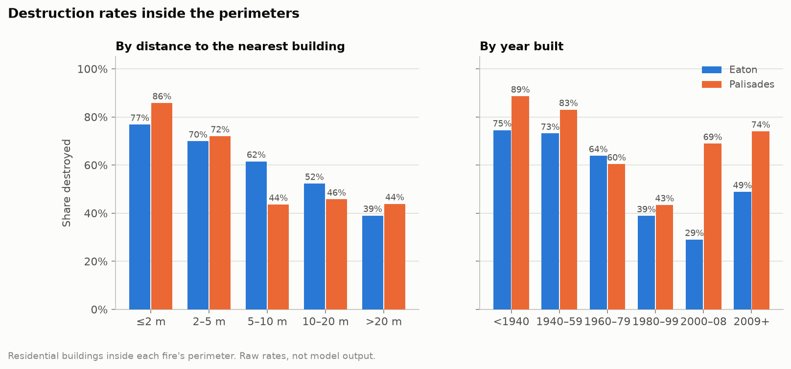
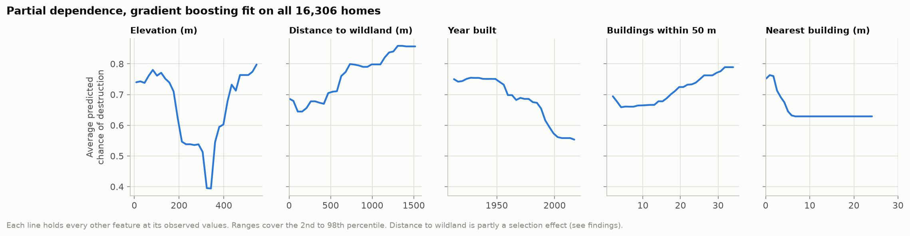
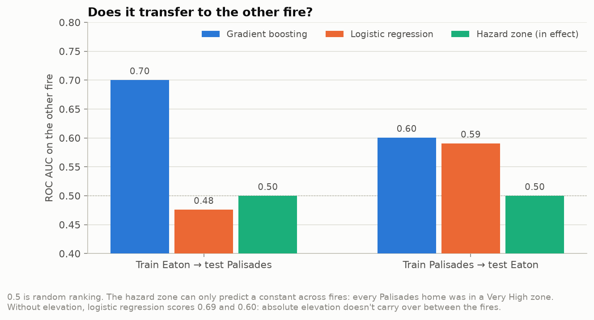

The question
For homes inside the January 2025 Palisades and Eaton fire perimeters, which things you could have measured before the fires best predicted whether a home was destroyed, and does a simple model built on them beat CAL FIRE's official Fire Hazard Severity Zones?
After the fires, CAL FIRE inspectors visited every building inside the perimeters and recorded the damage. That gives something rare: a known outcome for every home. This project uses it as an answer key. The point isn't to build the most accurate model possible. It's to build one honestly, using only information that existed before the fires, and then check it against what actually happened.
Key findings
Nearly everything inside the perimeters burned, 70% in both fires. That makes accuracy a useless yardstick: "they all burned" is 70% accurate. What matters is ranking. Could you tell, ahead of time, which homes were more likely to go?
The official map couldn't. Every Palisades home was in a Very High zone. In Eaton the map pointed the wrong way: – of homes in the Very High zone were destroyed, against – of homes outside any zone. It was built to say where fire is likely, not which house on a street survives, and that's the job this test asks about.
A small model on pre-fire data did clearly better, and its probabilities are well calibrated. What drove it: how old the house was, how close its neighbors were, and how far it sat from wildland. Homes with another building within 2 m were destroyed about 80% of the time, against about 40% for homes with nothing within 20 m. That's the house-to-house spread the Insurance Institute for Business & Home Safety described in these fires.
It transfers only partly. Trained on one fire and tested on the other, it scores – and –. That's still better than the map, but it shows how much depends on the particular fire.
Using the map
Each dot is a home that CAL FIRE inspected. Zoom in past street level and the dots become building outlines. Click one to see what happened to it, what the model predicted, and the pre-fire facts the prediction was based on.
The Color homes by buttons switch between what actually happened and what the model predicted. Flipping between them is the quickest way to see where the model was right and where it missed. The search box finds inspected homes by address, and the Go to buttons jump to each fire.
The layers add context. Turn on the hazard zones to see how much of each burn area the official map called Very High, or the burnable vegetation to see where the wildland edge was. The panel also compares how well the model and the map rank homes. The page address updates as you move, so you can share an exact view.
Reading the colors
What happened
- Red: destroyed, more than 50% damage.
- Yellow: damaged, from affected (up to 10%) through major (25 to 50%).
- Blue: no damage.
Model's predicted risk
- Pale to dark red is the predicted chance of destruction, from under 50% to over 80%. Every prediction comes from a model that was trained without that home's 500 m neighborhood, so the map never shows a model grading its own homework. Homes outside the perimeter are gray because the model wasn't trained or scored on them.
Layers
- Black line: CAL FIRE's final fire perimeter.
- Purple hatching: Very High Fire Hazard Severity Zone on the maps in effect in January 2025.
- Green: burnable vegetation in LANDFIRE's 2023 fuel map (grass, shrub, timber). Urban land, water and bare ground are left clear.
The data
Everything is public.
| Dataset | Publisher | How it's used |
|---|---|---|
| Damage Inspection (DINS) statewide master, both fires | CAL FIRE | The outcome for every residential building, plus year built from the assessor. |
| Buildings_2023_with_DINS | LA County | Building outlines, for neighbor spacing and the map. |
| 2025 Parcels with DINS | LA County Assessor | Parcel attributes and communities. Fills in year built where DINS has none. |
| Fire perimeters FRAP 2025 | CAL FIRE | Defines which homes are studied. |
| LF2023 fuel models (FBFM40) | LANDFIRE | Burnable vegetation around each home and the distance to wildland. 2023, before the fires. |
| 3DEP 1/3 arc-second DEM tile published Feb 2024 | USGS | Elevation, slope and aspect. |
| Fire Hazard Severity Zones | CAL FIRE, LA County Fire | The baseline: the maps in effect in January 2025, and the 2025 update for comparison. |
What the model knows
Only things that existed before January 7, 2025:
| Feature | How it's measured |
|---|---|
| Year built | Assessor year, plus a flag for homes built after 2008 under California's wildland building code |
| Neighbor spacing | Distance to the nearest other building, and how many buildings are within 10, 30 and 50 m. Garages and sheds count, since they burn too |
| Distance to wildland | Distance to the nearest patch of at least 10 ha of continuous burnable vegetation |
| Surrounding fuel | Share of a 30, 100 and 300 m circle that's burnable, and whether the home's own cell is |
| Terrain | Elevation, slope and which way the slope faces |
| Footprint size | Area of the building outline |
Two things are deliberately left out. Distance to the fire perimeter would score very well, but the perimeter is drawn around what burned, so it would be learning the answer. And the construction details inspectors recorded after the fire have a worse problem, covered below.
How I tested it
No random splits. Neighbors share outcomes, because whole blocks burned together, often because one house ignited the next. If a random split puts a house in the test set and its next-door neighbor in training, the model gets graded on a near-copy of something it already saw. So every test keeps whole areas apart.
Block cross-validation. The study area is cut into 500 m squares, and whole squares are dealt into five groups. The model is trained on four and tested on the fifth, five times over, so every home gets a prediction from a model that never saw its neighborhood.
Cross-fire. Train on Eaton and test on Palisades, then the reverse. This is the hardest test. It asks whether the lessons of one fire carry over to another.
Three measures. ROC AUC says how well the scores rank destroyed homes above survivors (0.5 is a coin flip). PR AUC focuses on finding the destroyed homes. The Brier score checks whether the probabilities themselves are right. The hazard map gets the same treatment: it predicts each zone's destruction rate from the training data, scored on the same tests.
Results
| Model | ROC AUC | Brier | Eaton → Palisades | Palisades → Eaton |
|---|---|---|---|---|
| Hazard zone, January 2025 | – | – | – | – |
| Logistic regression | – | – | – | – |
| Gradient boosting | – | – | – | – |
Predicting the 70% base rate for everyone gives a Brier score of –, so the hazard map adds nothing on that measure either.


What drives the predictions

Year built, neighbor spacing and distance to wildland matter in both kinds of test. Elevation is the strongest feature within the fires but much weaker across them, because absolute elevation mostly marks where in a particular fire a home sits. In fact, logistic regression trained on Eaton extrapolated so badly on Palisades, which reaches down to sea level, that it did worse than a coin flip. Without elevation it scores –.

One effect runs against intuition: homes farther from wildland were destroyed more often. Some of that is real, because dense interior neighborhoods burned house to house. Some of it is selection. Only homes inside the perimeter are studied, and a home deep in a neighborhood is only inside the perimeter if the fire reached it.


A model that looks great and means nothing
CAL FIRE's inspectors also recorded each home's roof, eaves, vents, windows, siding, decks and fences. Adding those lifts the model to –. It's a mirage. Inspectors fill those fields in after the fire, and on a house that burned to the foundation there are no eaves left to classify. They write "Unknown": for 71% of destroyed homes, against 0.7% of survivors. A model using only the "Unknown" flags scores –. It isn't learning about construction at all. It's learning whether there was anything left to inspect. None of those fields are used anywhere else.
Glossary
- DINS
- CAL FIRE's Damage Inspection program. After a fire, inspectors record every structure's damage in five classes: no damage, affected (up to 10%), minor (10 to 25%), major (25 to 50%) and destroyed (over 50%).
- Fire Hazard Severity Zone (FHSZ)
- CAL FIRE's map of fire hazard, in Moderate, High and Very High classes. It drives building code and disclosure rules. State-responsibility areas got an updated map in April 2024, and local areas in March 2025, after these fires.
- ROC AUC
- The chance that a randomly picked destroyed home gets a higher score than a randomly picked survivor. 0.5 is a coin flip and 1.0 is perfect.
- PR AUC (average precision)
- How precise the predictions are as you try to find more and more of the destroyed homes. Its floor is the share destroyed, about 0.70 here.
- Brier score
- The average squared gap between the predicted probability and what happened (0 or 1). Lower is better.
- Calibration
- Whether predicted probabilities mean what they say: of the homes given 80%, about 80% should have burned.
- Spatial cross-validation
- Testing a model on areas it never trained on, so neighbors can't leak their outcomes into the test.
- Gradient boosting
- A model built from many small decision trees, each correcting the last. This one is kept deliberately small, with trees three levels deep.
- Permutation importance
- How much the model's score drops when one feature's values are shuffled, measured on held-out data.
- Partial dependence
- How the average prediction changes as one feature moves, with every other feature left as it was.
- Leakage
- When a model's inputs carry information about the answer that wouldn't be available at prediction time.
- LANDFIRE FBFM40
- The 40 Scott and Burgan fire behavior fuel models, a 30 m national map of what kind of vegetation would carry fire. Codes 91 to 99 are non-burnable.
- Chapter 7A
- California's building code for wildland areas, which requires ember-resistant vents, ignition-resistant siding and similar features. It applies to construction from 2008 on.
- Santa Ana winds
- Hot, dry offshore winds in Southern California. Both fires burned under an extreme Santa Ana event.
Limitations
These are two fires under extreme Santa Ana winds. Under ordinary weather the wildland edge probably matters more and neighbor spacing less, and even between these two fires the results move.
The study only includes homes inside the final perimeters, which are drawn around what burned. That inflates some effects, distance to wildland most of all. A model meant for use before a fire would also have to cover homes the fire never reached.
DINS damage classes are reliable, but its construction fields are compromised, so construction is only represented through year built. Most building outlines date from 2008, and some homes share a parcel.
The hazard map in effect was largely CAL FIRE's 2007 to 2011 generation. Neither it nor its 2025 update was built to rank individual homes inside a burn area, and that's the specific job tested here.
The model finds what predicted destruction, not what caused it. Age, density and distance to wildland all travel with neighborhood history. This isn't an assessment of any individual home.
Reproducing it
The pipeline is Python (GeoPandas, Shapely, rasterio, scikit-learn) and runs end to end in under two minutes after a one-time download. The code is on GitHub.
make setup download
make pipeline # ingest → join → features → validate → figures → web data
make testThe data inventory, full method, and written findings are in the project's docs/ folder. The
IBHS report on these fires is Monroy et al. (2025), The 2025 LA Conflagrations.